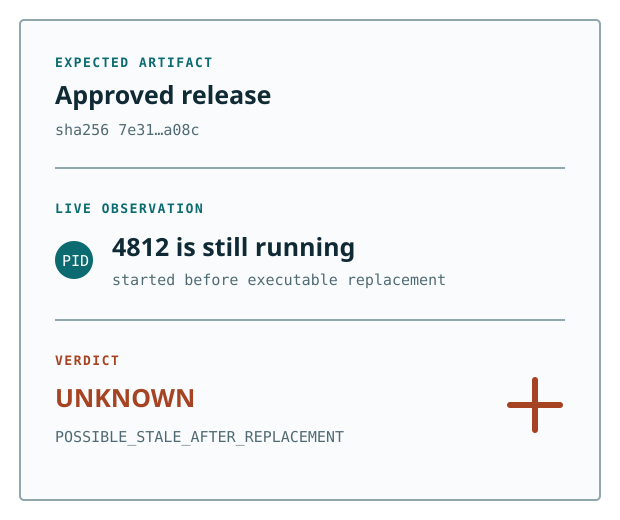

Local only
No network listener, telemetry, or upload path. Raw arguments, environments, code, secrets, and transcripts stay out of MCP responses.
Local runtime identity verification
A replaced executable does not replace yesterday's process. ARP inspects the live local runtime, binds it to an explicit artifact expectation, and preserves uncertainty when the evidence is incomplete.

The gap ARP closes
sha256: 7e31…a08cpid 4812 · started earlierPOSSIBLE_STALE_AFTER_REPLACEMENTNarrow by design
ARP observes. Your host remains in control.
No network listener, telemetry, or upload path. Raw arguments, environments, code, secrets, and transcripts stay out of MCP responses.
ARP does not stop processes, repair installations, rewrite Agent configuration, or promote an uncertain result to a match.
Use the CLI, local stdio MCP server, launch Witness, or embedded Go SDK on macOS arm64, Linux amd64, and Windows amd64.
Five-minute check
Download a signed release asset, verify its checksum, then inspect one explicit process or a bounded current-user inventory.
agent-runtime-proof doctor --format json
agent-runtime-proof inspect --all --limit 20
agent-runtime-proof verify \
--expectation /absolute/path/expectation.json \
--pid 1234 --format jsonTrust boundary
ARP complements checksums, signatures, build attestations, SBOMs, sandboxing, and host policy. It answers one narrower question: does the live local process match the artifact expectation you approved?